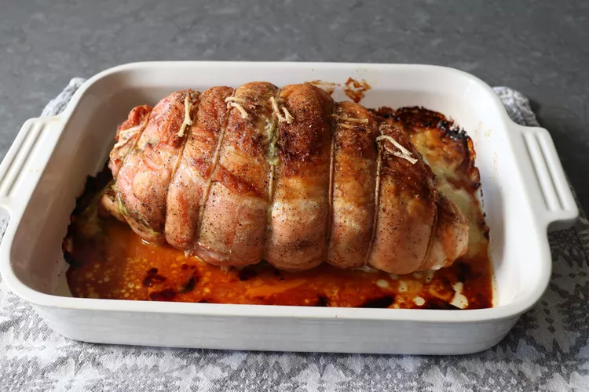

Holiday Roast Turkey Cordon Bleu

A melty ham and cheese filling with savory pesto, tangy mustard, and sweet cranberries adds interest and taste to this holiday roast turkey Cordon Bleu. It's moist, tender, and so flavorful that no gravy is needed, but it you're a gravy fan, by all means, use the pan drippings to make one
- 1 teaspoon vegetable oil
- 1 (4 pound) boneless, skin-on turkey breast
- 2 teaspoons kosher salt, divided
- 1 teaspoon freshly ground black pepper, divided
- ⅛ teaspoon ground cayenne pepper
- 2 tablespoons Dijon mustard
- 2 tablespoons prepared pesto sauce
- ¼ cup dried cranberries, or to taste
- 4 ounces ham, thinly sliced
- 5 thin slices provolone cheese
- Preheat the oven to 350 degrees F (175 degrees C). Grease a baking dish with vegetable oil.
- Place turkey breast, skin-side down, on a work surface. Open it up and trim off any connective tissue. Cut at an angle along the natural seam of the turkey and butterfly it open so it's all about the same thickness; don't cut all the way through.
- Season turkey breast with 1 teaspoon salt, ½ teaspoon pepper, and cayenne. Spread Dijon over the surface and then spread pesto over that. Scatter dried cranberries over top, then layer with ham and provolone cheese.
- Roll turkey breast from one side to the other to enclose the filling, and flip so the skin is facing up. Tie around the center with a kitchen string to secure. Repeat ties at 1-inch intervals along the length of the roast all the way to each end. Transfer to the prepared baking dish. Season the top and sides with remaining salt and pepper.
- Roast in the center of the preheated oven until internal temperature reaches 145 degrees F (65 degrees C), 1 ½ to 2 hours.
- Remove from the oven and let rest for at least 15 to 20 minutes. Cut off strings and slice.
Back to menu
Next Recipe